Sport, in Snacks.
Level deinen Tag up.
Keine einstündige Einheit, die du erst in deinen Tag quetschen musst. SnackUp schlägt dir Mikro-Einheiten von wenigen Minuten vor – passend zu deiner Zeit und deinem Alltag, verteilt über den Tag.
So wird Bewegung zur kleinen Gewohnheit, die sich ganz ohne Druck summiert – für einen Körper, der sich weiterentwickelt.
Beta läuft — tippen, um beizutreten!Ein paar Minuten reichen
Snacks von 30 Sekunden bis zu ein paar Minuten, wann immer du einen Moment hast — keine ganze Stunde nötig.
Es summiert sich
Jeder Snack zählt. Über den Tag verteilt decken sie ein ausgeglichenes Wochenvolumen ab, ganz nebenbei.
Ohne Schuldgefühl
Nie eine „verpasste Einheit". SnackUp verfolgt deinen Fortschritt zum Wochenziel, nicht einzelne Einheiten, die um jeden Preis gelingen müssen.
In der App
Wische dich durch, von deinem Startniveau bis zum Fortschrittsbaum.
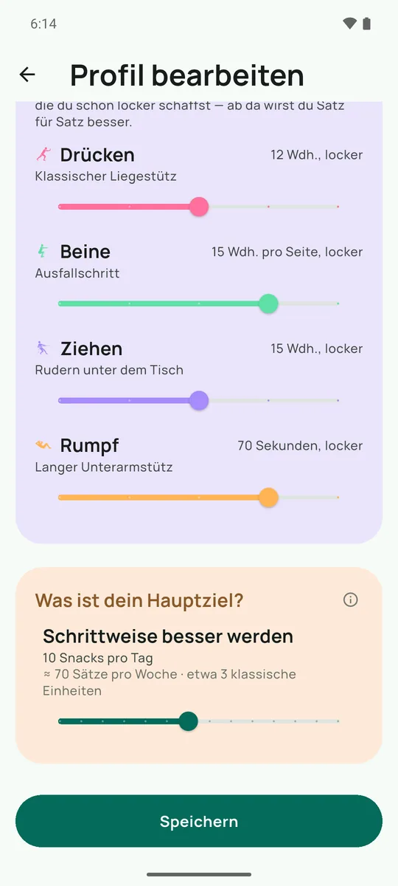
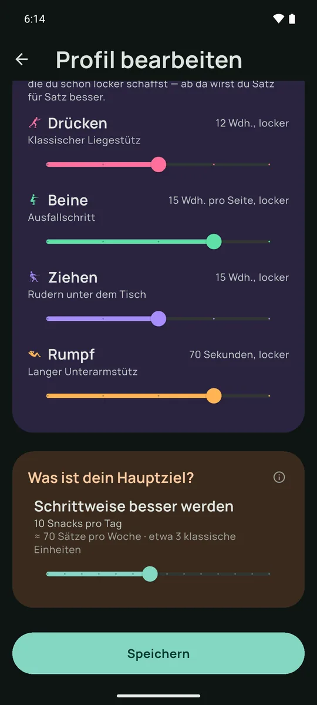
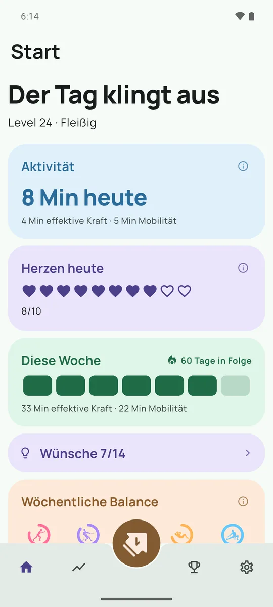
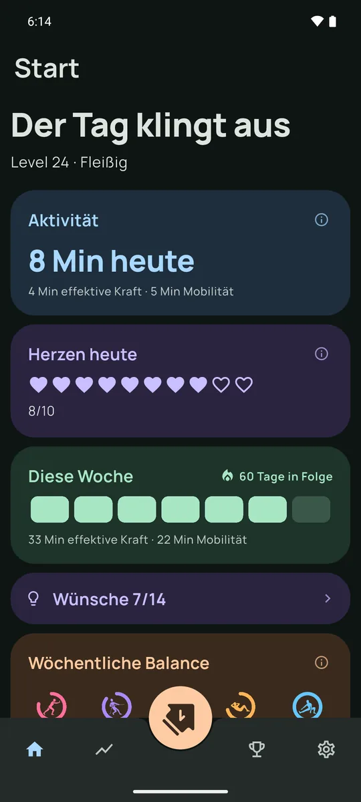
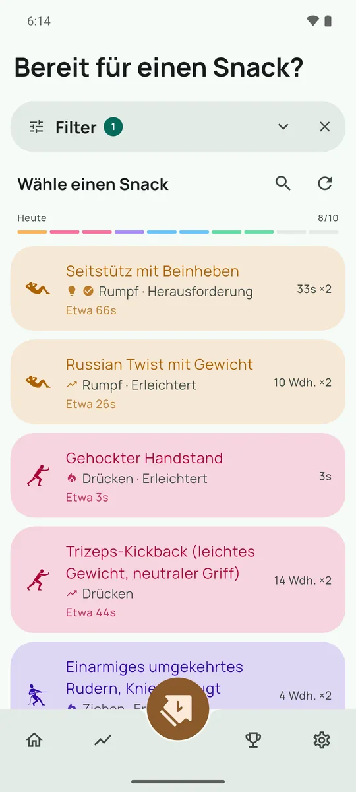
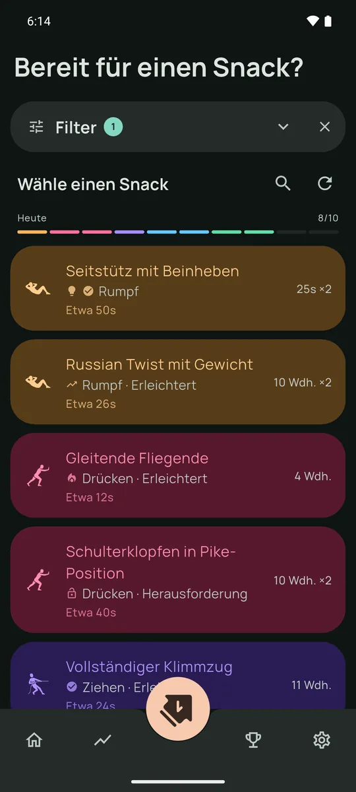
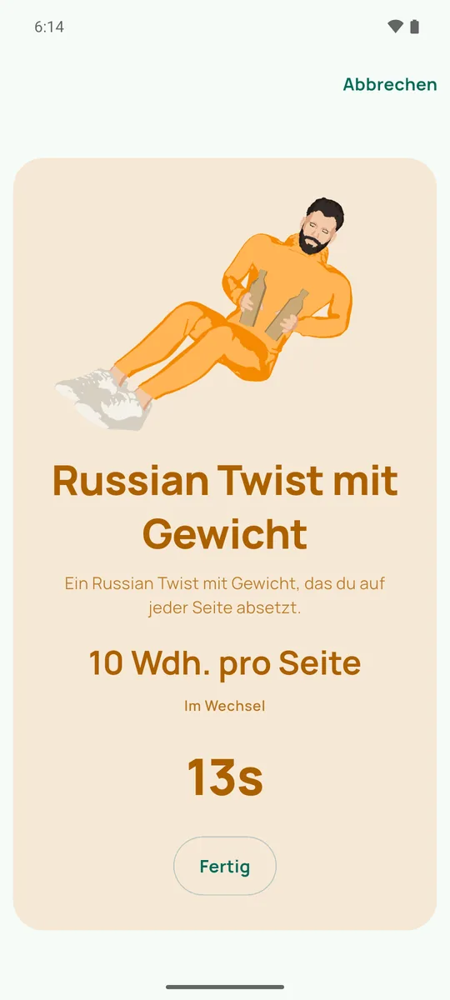
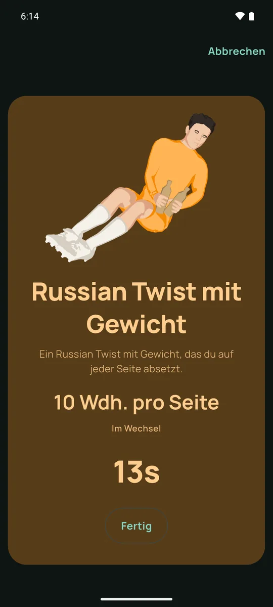
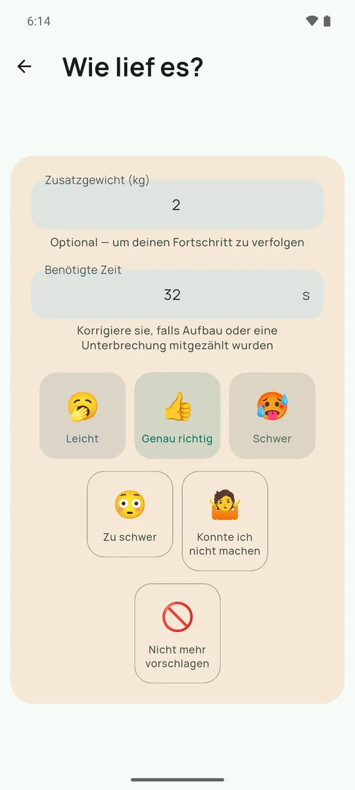
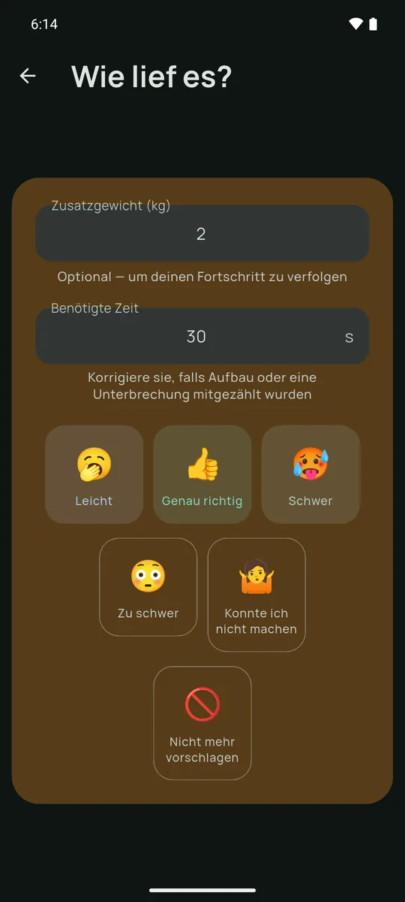
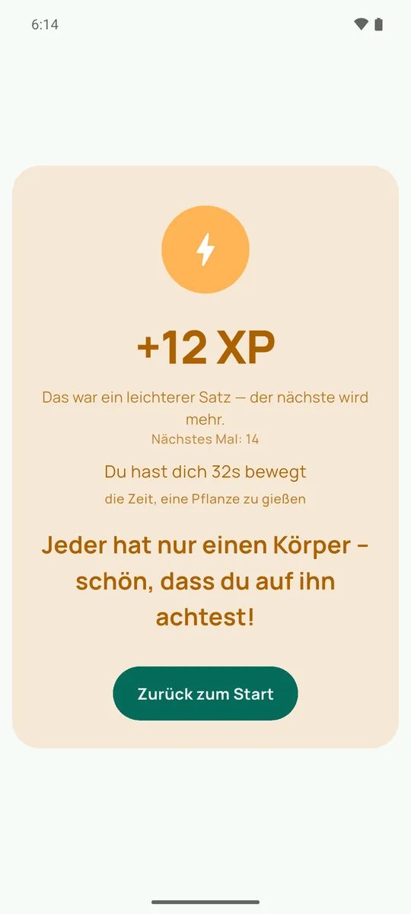
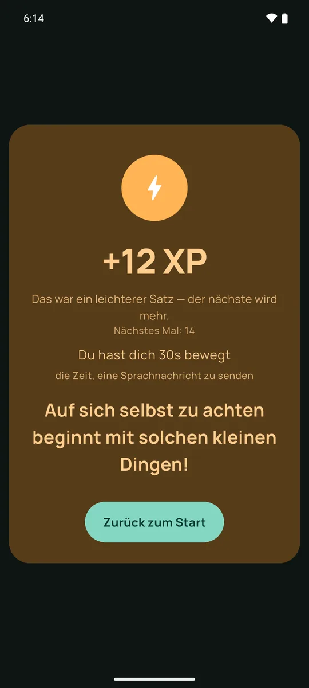
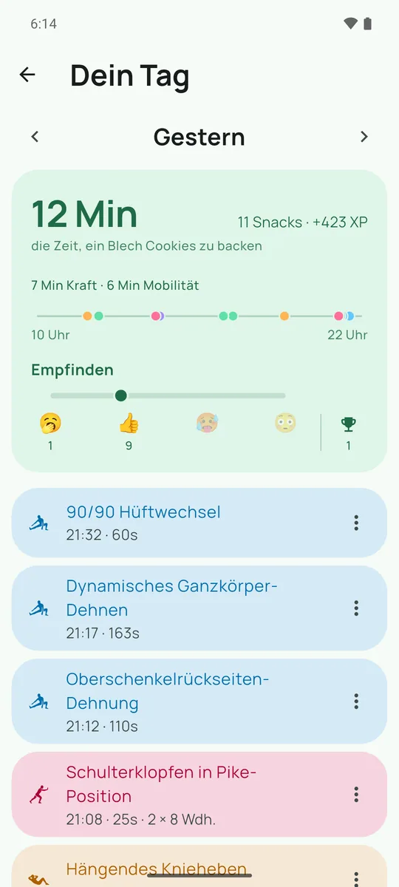
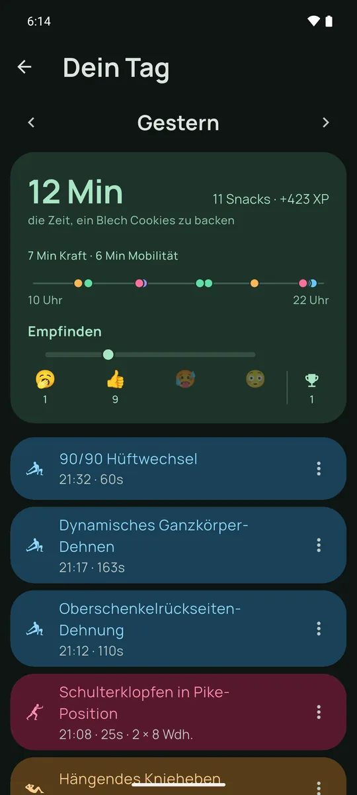
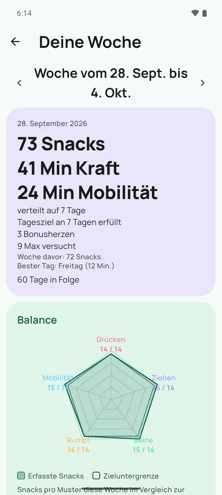
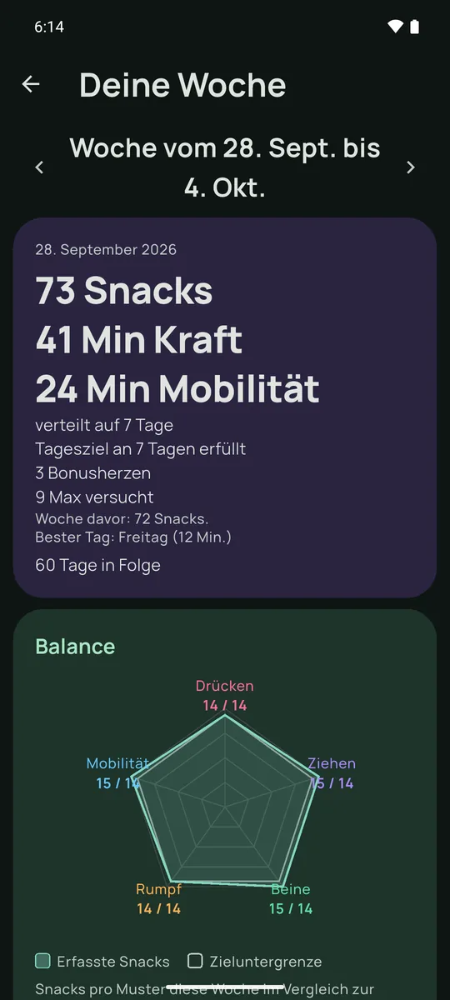
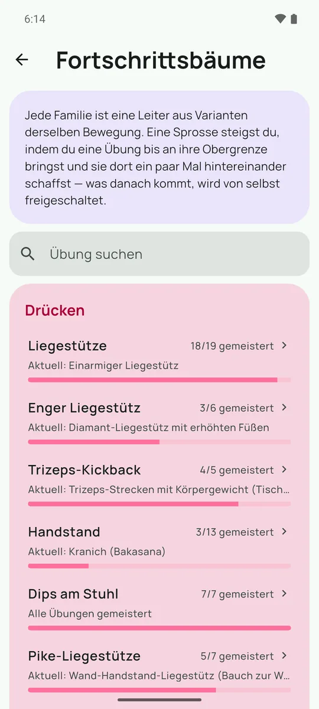
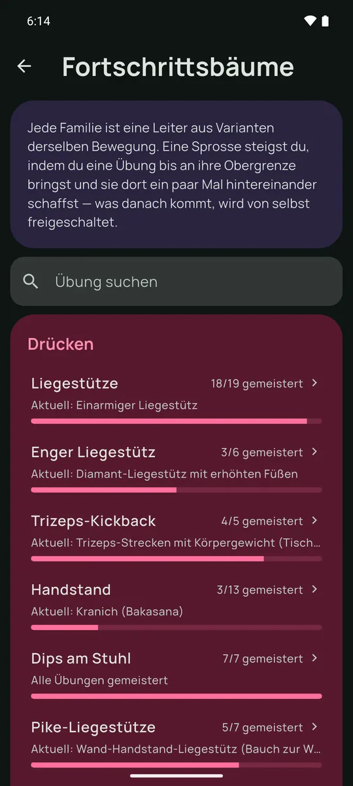
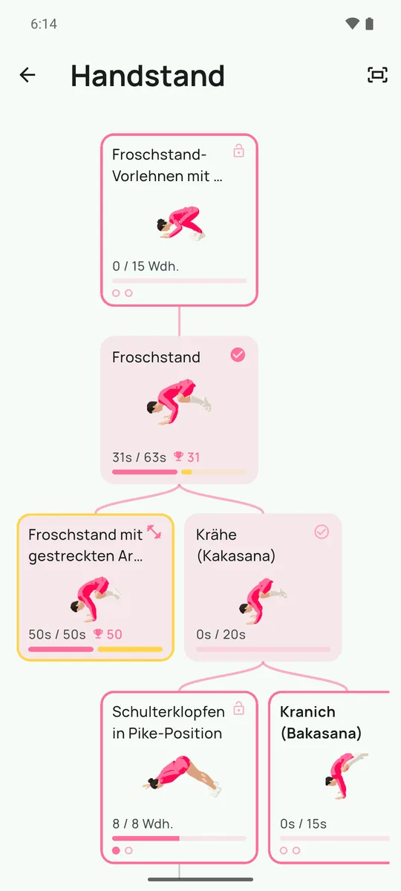
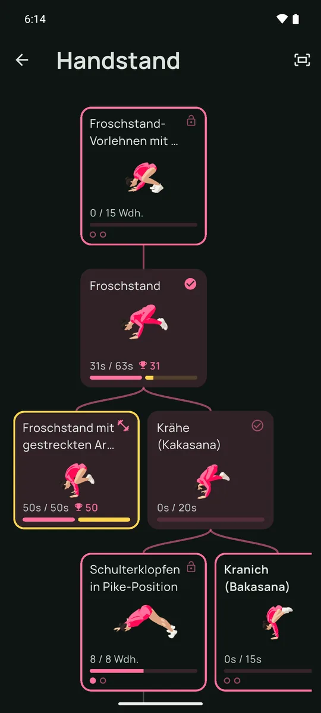
So funktioniert es
-
Die App erinnert dich
Über den Tag verteilt – genau dann, wenn du Zeit hast. Die App lernt, was du annimmst und was du auslässt. Du musst nichts planen.
-
Übung auswählen und loslegen
Ein paar Übungen, passend zu deiner Zeit, deinem Ort und dem, was du diese Woche schon gemacht hast. Gerade keine Zeit? Kein Problem. Der nächste Snack kommt.
-
Snack für Snack voran
Jeder Snack bringt dich deiner Wochenbalance und deinem Fortschritt im Übungsbaum ein Stück näher. Was du auslässt, bleibt einfach liegen. Nichts verfolgt dich – nächste Woche geht’s neu los.
Was bei dir bleibt
SnackUp ist eine lokale App. Es gibt keinen Server auf der Gegenseite: kein Konto, kein Profil im Internet, nichts, das anderswo als auf deinem Telefon zu löschen wäre.
- Kein Konto — keine Registrierung, keine E-Mail-Adresse nötig.
- Alles bleibt auf dem Gerät — und lässt sich verschlüsselt exportieren, wenn du das Telefon wechselst.
- Offline — die App funktioniert vollständig ohne Verbindung.
- Keine Werbung, kein Tracking — keine Reichweitenmessung, keine weitergegebenen Daten.
Kostenlos, ohne Mauer: Der Motor, die komplette Woche, die Erinnerungen, der Verlauf und die verschlüsselten Sicherungen bleiben es. Ein optionales Premium-Abo bringt Komfort und finanziert das Weitere. Die Einzelheiten stehen in den Nutzungsbedingungen und der Datenschutzerklärung.